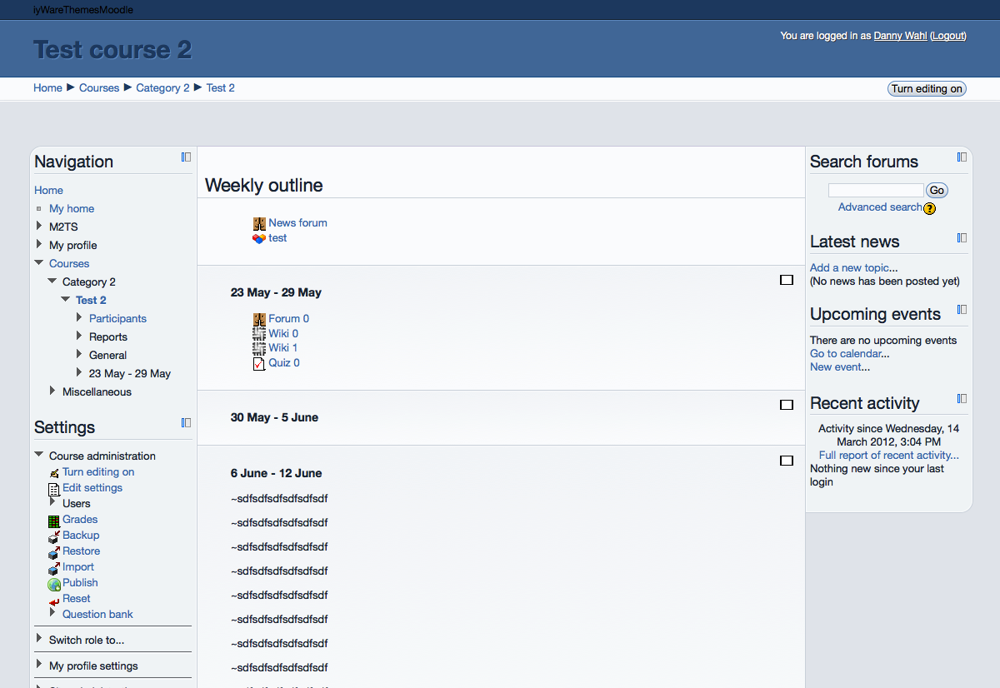
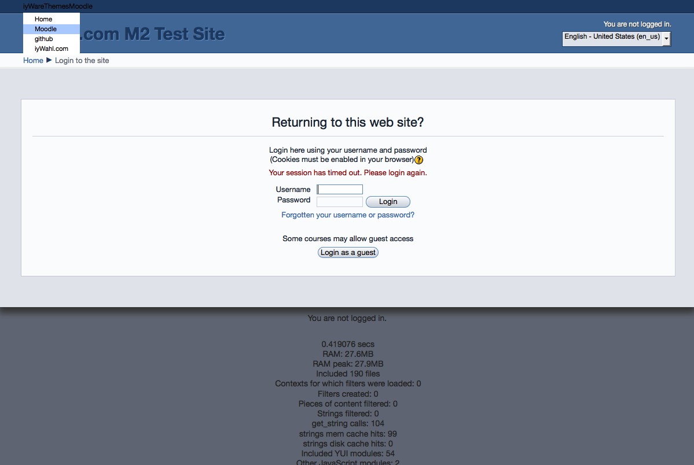
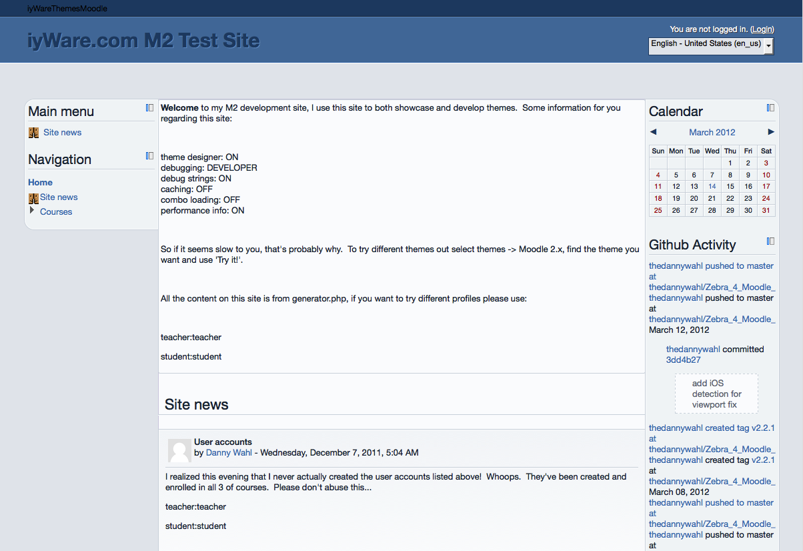

Discuss!
Discuss! is a minimalist yet robust theme for Moodle 2: subtle gradients, solid colors, round corners. Inspired by the look and feel of DISQUS.
Features
- Melbourne leverages advanced styling techniques via CSS3 for users with modern browsers
- Melbourne follows the coding principles of progressive enhancement, so users with older browsers aren’t left behind
- Valid XHTML 1.0 means that Melbourne works seamlessly with Moodle
- Vendor prefixes make sure that Melbourne displays properly for any user
Gallery



Download
This theme is available for download from the Moodle plugins directory or github.
Documentation & Support
Support for this theme is provided at the Moodle.org forums.